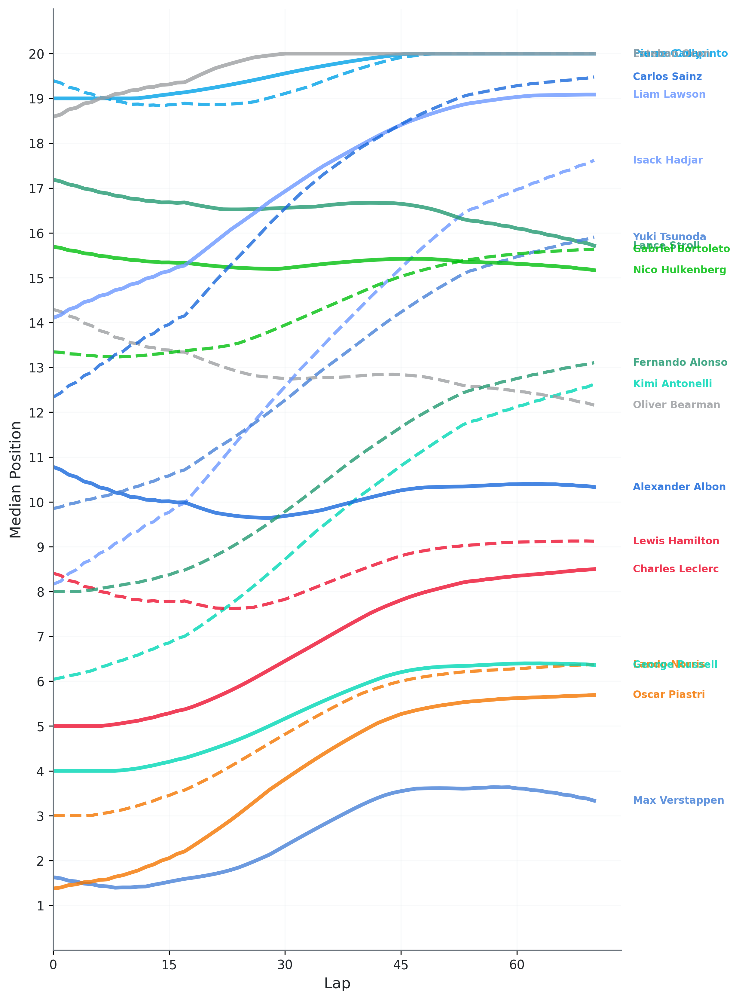
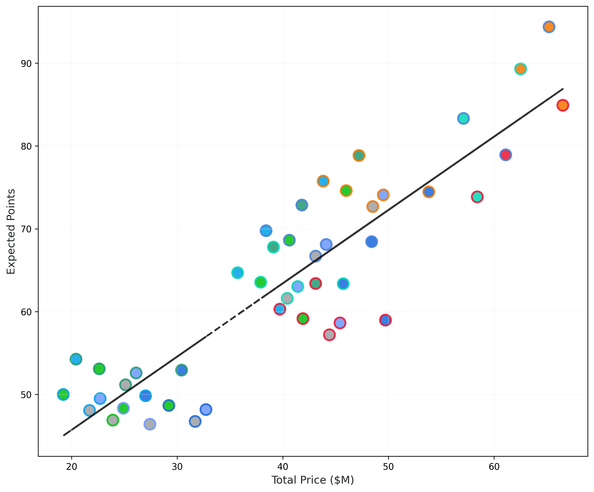
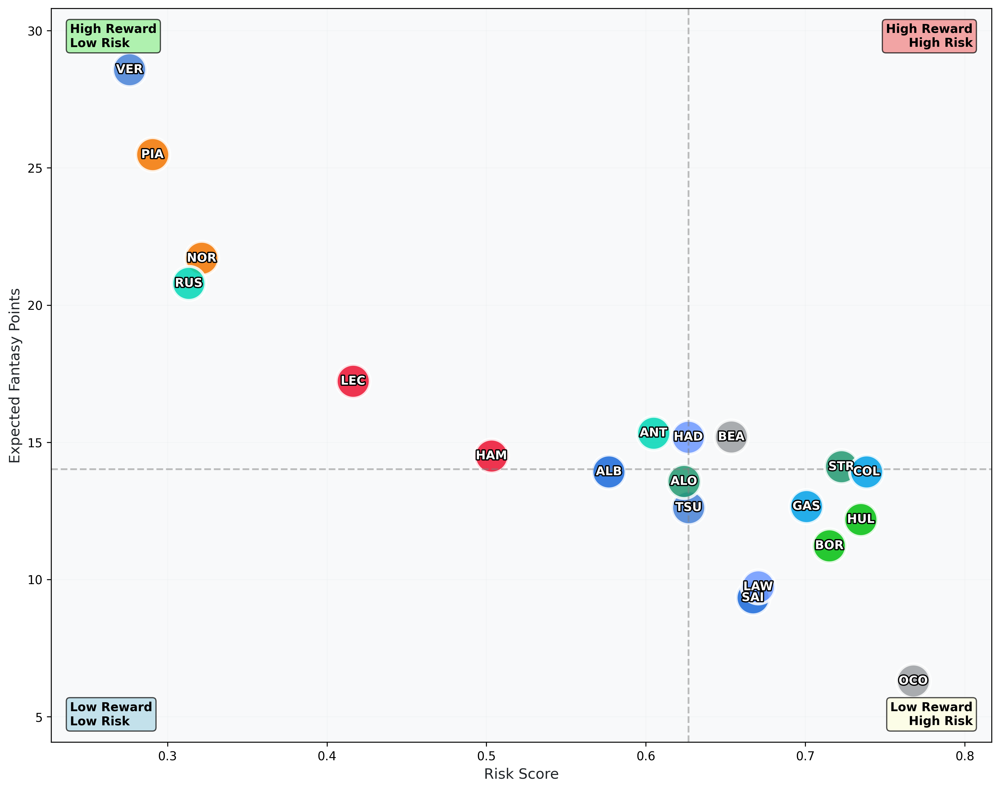
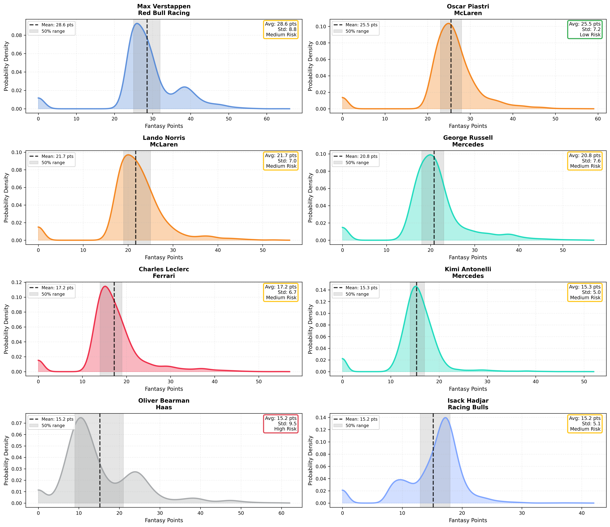
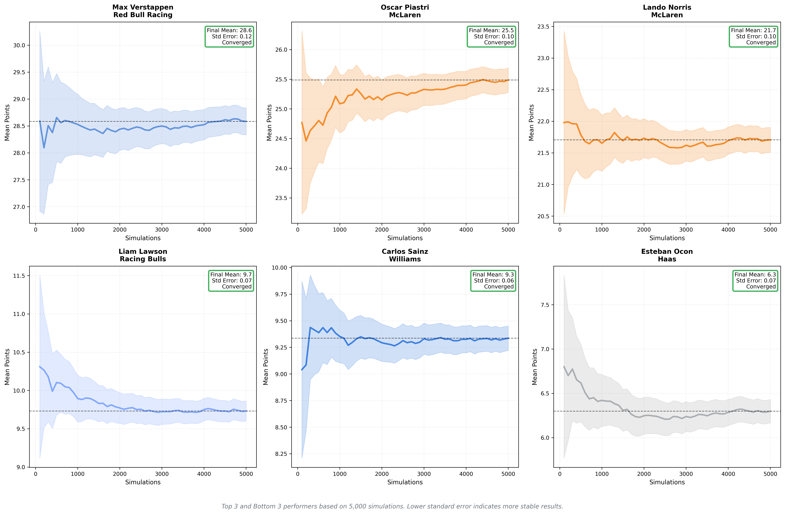
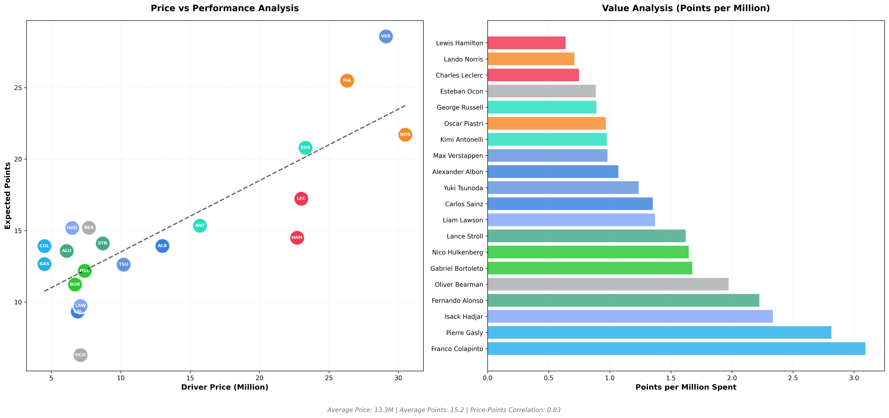

üèéÔ∏è F1 Fantasy Predictor
Data-driven team recommendations using Monte Carlo simulations and real 2025 season data
Mexico City Grand Prix
Race Date: 26 October 2025
2x
M. VERSTAPPEN
Red Bull Racing
$29.1M
O. PIASTRI
McLaren
$26.3M
I. HADJAR
Racing Bulls
$6.5M
P. GASLY
Alpine
$4.5M
F. COLAPINTO
Alpine
$4.5M
MCLAREN
Constructor
$35.3M
ALPINE
Constructor
$8.5M
Total Cost: 117.0M
Expected Points: 196.1
Expected Points: 196.1
Last updated: 25 October 2025 at 10:20 UTC
⚠️ Disclaimer: These predictions are based on statistical analysis and historical data.
F1 is unpredictable, so use these recommendations as a guide only.

Median race progression showing how driver positions evolve throughout the race

Constructors value analysis comparing price-to-points efficiency across all possible constructor combinations

Driver value quadrant analysis showing the relationship between risk and expected points

Points distribution analysis showing probability density of fantasy points for top drivers

Simulation convergence analysis showing how results stabilise over time

Price sensitivity analysis showing the relationship between driver prices and expected points